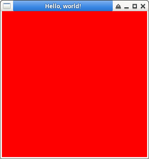

參考資訊：
https://www.khronos.org/opengl/wiki/Code_Resources
https://cs.lmu.edu/~ray/notes/openglexamples/
https://www.opengl.org/resources/libraries/glut/glut_downloads.php
main.c
#include <stdio.h>
#include <GL/glut.h>
void display(void)
{
glClear(GL_COLOR_BUFFER_BIT);
glFlush();
}
int main(int argc, char * argv[])
{
glutInit(&argc, argv);
glutInitDisplayMode(GLUT_SINGLE | GLUT_RGB);
glutInitWindowSize(300, 300);
glutCreateWindow("Hello, world!");
glutDisplayFunc(display);
glClearColor(1.0, 0, 0, 1.0);
glutMainLoop();
return 0;
}
編譯、執行
$ gcc main.c -o main -lglut -lGL $ ./main
